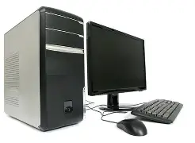

Un ordinateur de bureau [archive] ou ordinateur fixe (desktop computer en anglais) est un ordinateur personnel destiné à être utilisé sur un bureau ou tout autre endroit fixe à cause de ses dimensions, de sa masse et de son alimentation électrique. L'unité centrale est le plus souvent composé d'un boîtier qui comprend un bloc d'alimentation, une carte-mère (circuit imprimé sur lequel est fixé un micro-processeur en tant qu'unité centrale de traitement, la mémoire de traitement, les bus informatiques et d'autres composants électroniques) ainsi qu'un système d'entrées/sorties. Ce boîtier peut être connecté en permanence à plusieurs périphériques comme un écran, un clavier, une souris, des haut-parleurs, un micro, un disque dur externe, une imprimante ou un scanneur. Le boîtier peut être placé à la verticale ou l'horizontale, sur le bureau, à côté ou sous celui-ci.
| Description | Image | Prix |
| l'Ordinateur fixe est consus, pour avoir un tout plus grand comme, le clavier, la sourir; l'ecran, la tour... . |  | Entre 400 et 1300 Euros |